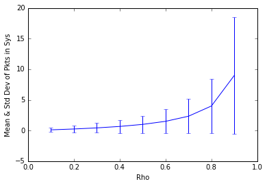

Python 3.5.2 |Anaconda 4.2.0 (x86_64)| (default, Jul 2 2016, 17:52:12)
Type "copyright", "credits" or "license" for more information.
IPython 5.1.0 -- An enhanced Interactive Python.
? -> Introduction and overview of IPython's features.
%quickref -> Quick reference.
help -> Python's own help system.
object? -> Details about 'object', use 'object??' for extra details.
In [1]: import matplotlib.pyplot as plt
...: import numpy as np
...:
...: def stdDevN(rho):
...: return np.sqrt(rho/((1-rho)**2))
...:
...:
...: def meanN(rho):
...: return rho/(1-rho)
...:
...:
...: rhos = np.arange(0.1,1.0,0.1)
...: means = [meanN(r) for r in rhos]
...: stds = [stdDevN(r) for r in rhos]
...: plt.errorbar(rhos,means,yerr=stds)
...: plt.xlim([0,1]), plt.xlabel("Rho"), plt.ylabel("Mean & Std Dev of Pkts in Sys")
...: plt.show()
...:
...:

In [2]: